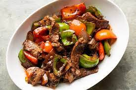

Simple and delicious beef with mixed vegetables. You don't have to stick with these vegetables. Change them to your personal taste. Try serving over rice or noodles.
Ingredients
- 8 ounces beef filet, cut into 1/2 inch strips
- 2 tablespoons vegetable oil
- 1 onion, chopped
- 1 clove garlic, minced
- 1 teaspoon chopped fresh ginger root
- 1 green bell pepper, chopped
- 1 carrot, chopped
- 1 (10.5 ounce) can beef broth
- 1 tablespoon cornstarch
- 1 tablespoon soy sauce
- 1 tablespoon chill sauce
- salt and pepper to taste